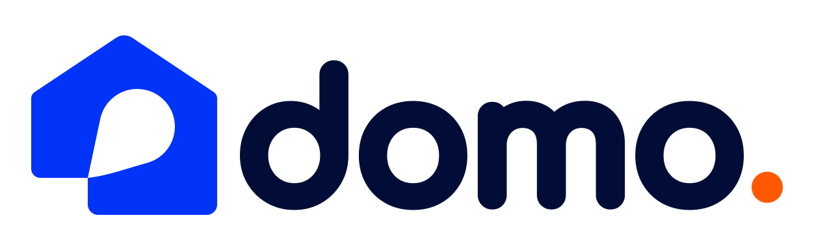
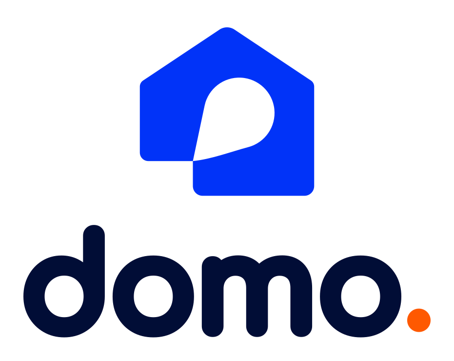
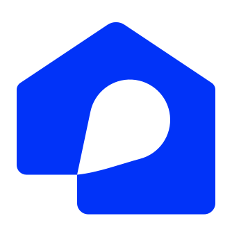
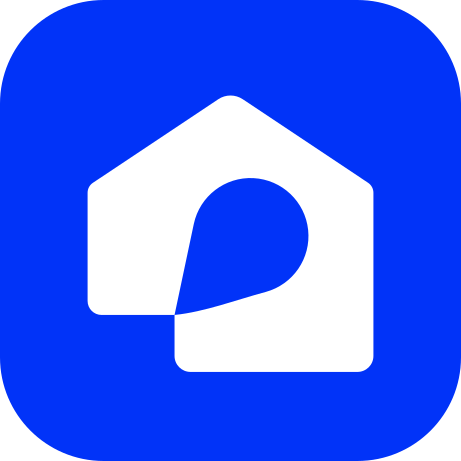
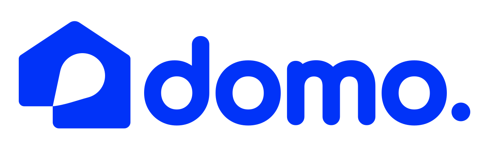
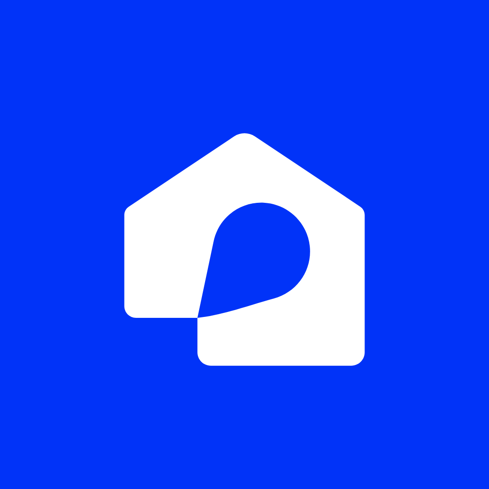
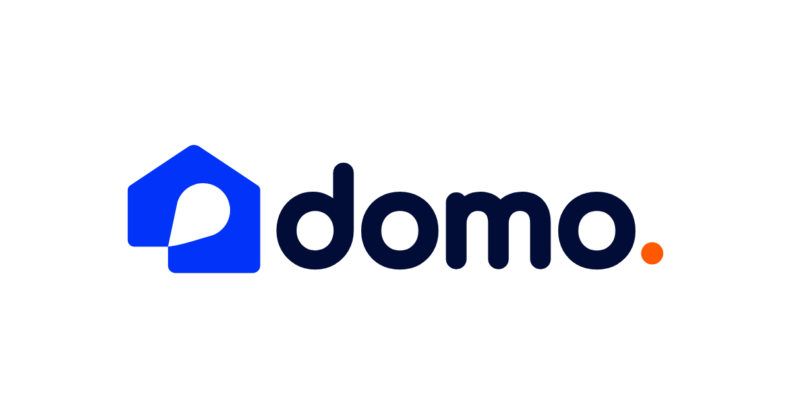

Le symbole est une maison : le foyer, l’endroit où l’on trouve ce qu’il faut. La goutte découpée à l’intérieur est un repère de lieu : chez vous, là où la commande arrive. Le point orange qui termine « domo. » dit la même chose en une seule touche : c’est ici.

Utilisez la version horizontale partout où la place le permet. La version empilée sert aux formats carrés ; le symbole seul, aux petits formats (icône d’application, favicon, avatar) ; le logotype seul, quand le symbole est déjà visible ailleurs.



L’unité de mesure x est le diamètre du point orange. Gardez au moins 2x d’espace vide autour du logo : aucun texte, bord ou image dans cette zone. Les proportions entre le symbole et le logotype sont fixes ; ne les recomposez pas.
| Logo horizontal | 120 px de large à l’écran · 30 mm en impression |
| Logo empilé | 72 px de large · 20 mm |
| Symbole seul | 16 px (favicon) · 8 mm |
| Toit | pente 2:3 (33,7°), faîte arrondi |
| Goutte | cercle + pointe posée sur la marche du bas |
| Logotype | Comfortaa Bold vectorisée, contour 8,4 unités, espacement régulier |
Le bleu porte la marque, l’encre porte le texte, l’orange signale ce qui compte : le point du logo, un bouton d’action, un prix promo. L’orange reste un accent ; il ne remplit jamais de grandes surfaces.
| HEX | #0133F8 |
| RGB | 1 · 51 · 248 |
| CMJN* | 100 · 79 · 0 · 3 |
| HEX | #010D36 |
| RGB | 1 · 13 · 54 |
| CMJN* | 98 · 76 · 0 · 79 |
| HEX | #FE5901 |
| RGB | 254 · 89 · 1 |
| CMJN* | 0 · 65 · 100 · 0 |
| HEX | #F4F5FA |
| RGB | 244 · 245 · 250 |
| CMJN* | 2 · 2 · 0 · 2 |
Contrastes vérifiés : blanc sur Bleu Domo 7,4:1 et encre sur blanc 18,9:1 (AAA) · encre sur orange 6,0:1 (AA) · blanc sur orange 3,2:1 : seulement pour du texte gras de 19 px et plus. *Valeurs CMJN calculées à partir du RGB : à valider avec l’imprimeur sur épreuve (références Pantone à choisir sur nuancier).
Comfortaa, la police du logo, donne le ton dans les titres. Nunito, arrondie elle aussi, reste lisible en petit : elle sert au texte, aux interfaces et aux documents. Les deux sont libres (SIL Open Font License) et disponibles sur Google Fonts.
Arabe : Cairo (déjà utilisée par l’application) pour toutes les versions arabes.
Le logo en couleur va sur le blanc et la Brume. Sur le Bleu Domo ou l’Encre, utilisez la version blanche, le point restant orange. Sur une photo, choisissez une zone calme ou ajoutez un voile sombre.


Le logo s’utilise toujours à partir des fichiers fournis. Ne le redessinez pas, ne le retapez pas dans une police, ne le recomposez pas.



| logo/ | Horizontal, empilé, logotype · couleur, blanc, noir, bleu, blanc 1 couleur (SVG vectoriel) |
| icon/ | Symbole couleur, encre, noir, blanc · icône d’application (SVG) |
| png/ | Tous les logos en PNG transparent, 1200 et 2400 px (icônes 512 et 1024 px) |
| web/ | favicon.ico / .svg, favicon 16-32-48 px, apple-touch-icon, icônes 192 et 512, maskable, site.webmanifest, extrait <head> |
| social/ | Photo de profil 1080 px, aperçu de lien 1200 × 630 (blanc et bleu), couverture 1500 × 500 |
| guidelines/ | Cette charte (PDF et HTML) |
Utilisez le SVG partout où c’est possible (site, application, impression) : il reste net à toutes les tailles. Le PNG sert aux outils qui n’acceptent pas le SVG (réseaux sociaux, présentations).
Le logotype est vectorisé : il ne dépend d’aucune police installée. Pour les titres et le texte, installez Comfortaa et Nunito depuis Google Fonts.
Avant toute impression ou dépôt de marque, faites vérifier le logo et le nom auprès de l’INNORPI et par une recherche d’antériorité : le symbole « maison + goutte » est proche d’autres marques existantes.